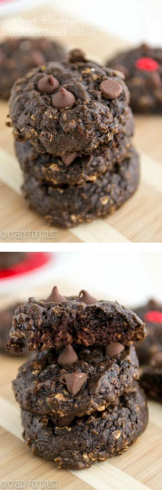

Chocolate Oatmeal Cookies :D
back to home

These cookies are heart healthier. For when you need a sweet that tastes like a cookie, not a piece of cardboard.
Ingredients
- ½ cup mashed avocado from about 1 medium avocado
- li>2 tablespoons vegetable oil
- ½ cup brown sugar
- ¼ cup granulated sugar
- 1 teaspoon vanilla extract
- 1 large egg
- ¼ cup unsweetened cocoa powder
- 1 teaspoon baking soda
- ¼ teaspoon salt optional
- ¼ teaspoon salt optional
- 1 cup quick-cooking oats
- ½ teaspoon cinnamon
- ½ cup flour
- 1/3 cup chocolate chips optional
- 1/3 cup chopped walnuts or almonds optional
Instructions
- Preheat oven to 350°F. Line two cookie sheets with silpat baking mats or parchment paper. (These cookies stick, even to the silicone, so if you are not using silicone, be sure to grease your pans.)
- Note on mashing avocado: Place your avocado in a small bowl and mash with a potato masher, then measure out ½ cup. Alternately, if you’re worried about avocado lumps, you can puree the avocado in a food
processor, then measure out ½ cup. One medium avocado is about ½ cup mashed.
- Stir avocado and oil in a large bowl with a wooden spoon. Stir in both sugars. Add vanilla, egg, and cocoa and mix until smooth (there may be some lumps from the avocado). Stir in baking soda, salt, oats,
and cinnamon. Carefully stir in flour. Dough will be wet.
- At this point you can mix in the chocolate chips and/or walnuts if you’re using them. I pressed chocolate chips on the top of each cookie instead of mixing them in. Either way will work!
- Drop dough by 2 tablespoonfuls onto cookie sheet. Bake for about 8-10 minute (mine took 9). Cool before eating.
- You need to use a spatula to remove them from the cookie sheet, they will stick. Best within 2 days.